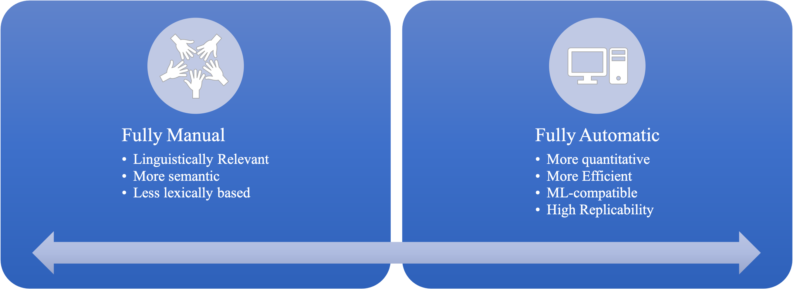
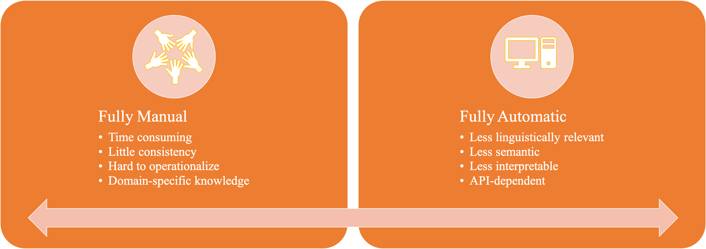

<!DOCTYPE html>

<html>
  <head>
    <meta charset="utf-8" />
    <meta name="viewport" content="width=device-width, initial-scale=1.0" />
    <title>NLP Pipeline &#8212; ENC2045 Computational Linguistics</title>
    
  <link rel="stylesheet" href="../_static/css/index.f658d18f9b420779cfdf24aa0a7e2d77.css">

    
  <link rel="stylesheet"
    href="../_static/vendor/fontawesome/5.13.0/css/all.min.css">
  <link rel="preload" as="font" type="font/woff2" crossorigin
    href="../_static/vendor/fontawesome/5.13.0/webfonts/fa-solid-900.woff2">
  <link rel="preload" as="font" type="font/woff2" crossorigin
    href="../_static/vendor/fontawesome/5.13.0/webfonts/fa-brands-400.woff2">

    
      
  <link rel="stylesheet"
    href="../_static/vendor/open-sans_all/1.44.1/index.css">
  <link rel="stylesheet"
    href="../_static/vendor/lato_latin-ext/1.44.1/index.css">

    
    <link rel="stylesheet" href="../_static/sphinx-book-theme.40e2e510f6b7d1648584402491bb10fe.css" type="text/css" />
    <link rel="stylesheet" href="../_static/pygments.css" type="text/css" />
    <link rel="stylesheet" type="text/css" href="../_static/togglebutton.css" />
    <link rel="stylesheet" type="text/css" href="../_static/copybutton.css" />
    <link rel="stylesheet" type="text/css" href="../_static/mystnb.css" />
    <link rel="stylesheet" type="text/css" href="../_static/sphinx-thebe.css" />
    <link rel="stylesheet" type="text/css" href="../_static/mycss.css" />
    <link rel="stylesheet" type="text/css" href="../_static/panels-main.c949a650a448cc0ae9fd3441c0e17fb0.css" />
    <link rel="stylesheet" type="text/css" href="../_static/panels-variables.06eb56fa6e07937060861dad626602ad.css" />
    
  <link rel="preload" as="script" href="../_static/js/index.d3f166471bb80abb5163.js">

    <script id="documentation_options" data-url_root="../" src="../_static/documentation_options.js"></script>
    <script src="../_static/jquery.js"></script>
    <script src="../_static/underscore.js"></script>
    <script src="../_static/doctools.js"></script>
    <script src="../_static/language_data.js"></script>
    <script src="../_static/togglebutton.js"></script>
    <script src="../_static/clipboard.min.js"></script>
    <script src="../_static/copybutton.js"></script>
    <script >var togglebuttonSelector = '.toggle, .admonition.dropdown, .tag_hide_input div.cell_input, .tag_hide-input div.cell_input, .tag_hide_output div.cell_output, .tag_hide-output div.cell_output, .tag_hide_cell.cell, .tag_hide-cell.cell';</script>
    <script src="../_static/sphinx-book-theme.d31b09fe5c1d09cb49b26a786de4a05d.js"></script>
    <script async="async" src="https://cdn.jsdelivr.net/npm/mathjax@3/es5/tex-mml-chtml.js"></script>
    <script type="text/x-mathjax-config">MathJax.Hub.Config({"tex2jax": {"inlineMath": [["\\(", "\\)"]], "displayMath": [["\\[", "\\]"]], "processRefs": false, "processEnvironments": false}})</script>
    <script async="async" src="https://unpkg.com/thebelab@latest/lib/index.js"></script>
    <script >
        const thebe_selector = ".thebe"
        const thebe_selector_input = "pre"
        const thebe_selector_output = ".output"
    </script>
    <script async="async" src="../_static/sphinx-thebe.js"></script>
    <link rel="index" title="Index" href="../genindex.html" />
    <link rel="search" title="Search" href="../search.html" />
    <link rel="next" title="Text Preprocessing" href="text-preprocessing.html" />
    <link rel="prev" title="Natural Language Processing: A Primer" href="nlp-primer.html" />

    <meta name="viewport" content="width=device-width, initial-scale=1" />
    <meta name="docsearch:language" content="en" />


  </head>
  <body data-spy="scroll" data-target="#bd-toc-nav" data-offset="80">
    

    <div class="container-xl">
      <div class="row">
          
<div class="col-12 col-md-3 bd-sidebar site-navigation show" id="site-navigation">
    
        <div class="navbar-brand-box">
<a class="navbar-brand text-wrap" href="../index.html">
  
  
  
  
  <h1 class="site-logo" id="site-title">ENC2045 Computational Linguistics</h1>
  
</a>
</div><form class="bd-search d-flex align-items-center" action="../search.html" method="get">
  <i class="icon fas fa-search"></i>
  <input type="search" class="form-control" name="q" id="search-input" placeholder="Search this book..." aria-label="Search this book..." autocomplete="off" >
</form>
<nav class="bd-links" id="bd-docs-nav" aria-label="Main navigation">
    <p class="caption collapsible-parent">
 <span class="caption-text">
  INTRODUCTION
 </span>
</p>
<ul class="current nav sidenav_l1">
 <li class="toctree-l1">
  <a class="reference internal" href="nlp-primer.html">
   Natural Language Processing: A Primer
  </a>
 </li>
 <li class="toctree-l1 current active">
  <a class="current reference internal" href="#">
   NLP Pipeline
  </a>
 </li>
</ul>
<p class="caption collapsible-parent">
 <span class="caption-text">
  Preprocessing
 </span>
</p>
<ul class="nav sidenav_l1">
 <li class="toctree-l1 collapsible-parent">
  <a class="reference internal" href="text-preprocessing.html">
   Text Preprocessing
  </a>
  <ul class="collapse-ul">
   <li class="toctree-l2">
    <a class="reference internal" href="text-normalization-eng.html">
     Text Normalization
    </a>
   </li>
   <li class="toctree-l2">
    <a class="reference internal" href="text-tokenization.html">
     Text Tokenization
    </a>
   </li>
   <li class="toctree-l2">
    <a class="reference internal" href="text-enrichment.html">
     Text Enrichment
    </a>
   </li>
   <li class="toctree-l2">
    <a class="reference internal" href="chinese-word-seg.html">
     Chinese Word Segmentation
    </a>
   </li>
   <li class="toctree-l2">
    <a class="reference internal" href="google-colab.html">
     Google Colab
    </a>
   </li>
  </ul>
  <i class="fas fa-chevron-down">
  </i>
 </li>
</ul>
<p class="caption collapsible-parent">
 <span class="caption-text">
  Text Vectorization
 </span>
</p>
<ul class="nav sidenav_l1">
 <li class="toctree-l1">
  <a class="reference internal" href="text-vec-traditional.html">
   Text Vectorization Using Traditional Methods
  </a>
 </li>
</ul>
<p class="caption collapsible-parent">
 <span class="caption-text">
  Machine Learning Basics
 </span>
</p>
<ul class="nav sidenav_l1">
 <li class="toctree-l1">
  <a class="reference internal" href="ml-overview.html">
   1. Machine Learning: Overview
  </a>
 </li>
 <li class="toctree-l1">
  <a class="reference internal" href="ml-simple-case.html">
   2. Machine Learning: A Simple Example
  </a>
 </li>
 <li class="toctree-l1">
  <a class="reference internal" href="ml-algorithm.html">
   3. Classification Models
  </a>
 </li>
</ul>
<p class="caption collapsible-parent">
 <span class="caption-text">
  Machine-Learning NLP
 </span>
</p>
<ul class="nav sidenav_l1">
 <li class="toctree-l1">
  <a class="reference internal" href="ml-sklearn-classification.html">
   1. Sentiment Analysis Using Bag-of-Words
  </a>
 </li>
 <li class="toctree-l1">
  <a class="reference internal" href="topic-modeling-naive.html">
   2. Topic Modeling: A Naive Example
  </a>
 </li>
</ul>
<p class="caption collapsible-parent">
 <span class="caption-text">
  Deep Learning NLP
 </span>
</p>
<ul class="nav sidenav_l1">
 <li class="toctree-l1">
  <a class="reference internal" href="dl-neural-network-from-scratch.html">
   1. Neural Network From Scratch
  </a>
 </li>
 <li class="toctree-l1">
  <a class="reference internal" href="dl-simple-case.html">
   2. Deep Learning: A Simple Example
  </a>
 </li>
 <li class="toctree-l1">
  <a class="reference internal" href="dl-sentiment-case.html">
   3. Deep Learning: Sentiment Analysis
  </a>
 </li>
</ul>
<p class="caption collapsible-parent">
 <span class="caption-text">
  Neural Language Model and Embeddings
 </span>
</p>
<ul class="nav sidenav_l1">
 <li class="toctree-l1">
  <a class="reference internal" href="dl-sequence-models-intuition.html">
   1. Sequence Models Intuition
  </a>
 </li>
 <li class="toctree-l1">
  <a class="reference internal" href="dl-neural-language-model-primer.html">
   2. Neural Language Model: A Start
  </a>
 </li>
 <li class="toctree-l1">
  <a class="reference internal" href="text-vec-embedding.html">
   3. Word Embeddings
  </a>
 </li>
</ul>
<p class="caption collapsible-parent">
 <span class="caption-text">
  Seq2Seq, Attention, Transformers, and Transfer Learning
 </span>
</p>
<ul class="nav sidenav_l1">
 <li class="toctree-l1">
  <a class="reference internal" href="dl-attention-transformer-intuition.html">
   1. Attention and Transformers: Intuitions
  </a>
 </li>
 <li class="toctree-l1">
  <a class="reference internal" href="dl-seq-to-seq-attention-addition.html">
   2. Sequence Model with Attention for Addition Learning
  </a>
 </li>
 <li class="toctree-l1">
  <a class="reference internal" href="dl-transformers-keras.html">
   3. Sentiment Classification with Transformer (Self-Study)
  </a>
 </li>
 <li class="toctree-l1">
  <a class="reference internal" href="sentiment-analysis-using-bert-keras-movie-reviews.html">
   4. Transfer Learning With BERT (Self-Study)
  </a>
 </li>
</ul>
<p class="caption collapsible-parent">
 <span class="caption-text">
  Exercises
 </span>
</p>
<ul class="nav sidenav_l1">
 <li class="toctree-l1">
  <a class="reference internal" href="../exercise/1-python-basics.html">
   Assignment I: Python Basics
  </a>
 </li>
 <li class="toctree-l1">
  <a class="reference internal" href="../exercise/2-journal-review.html">
   Assignment II: Journal Articles Review
  </a>
 </li>
 <li class="toctree-l1">
  <a class="reference internal" href="../exercise/3-preprocessing.html">
   Assignment III: Preprocessing
  </a>
 </li>
 <li class="toctree-l1">
  <a class="reference internal" href="../exercise/4-chinese-nlp.html">
   Assignment IV: Chinese Language Processing
  </a>
 </li>
 <li class="toctree-l1">
  <a class="reference internal" href="../exercise/5-text-vectorization.html">
   Assignment V: Text Vectorization
  </a>
 </li>
 <li class="toctree-l1">
  <a class="reference internal" href="../exercise/6-machine-learning.html">
   Assignment VI: Machine Learning
  </a>
 </li>
 <li class="toctree-l1">
  <a class="reference internal" href="../exercise/7-topic-modeling.html">
   Assignment VII: Topic Modeling
  </a>
 </li>
 <li class="toctree-l1">
  <a class="reference internal" href="../exercise/8-dl-chinese-name-gender.html">
   Assignment VIII: Deep Learning
  </a>
 </li>
 <li class="toctree-l1">
  <a class="reference internal" href="../exercise/9-sentiment-analysis-dl.html">
   Assignment IX: Sentiment Analysis Using Deep Learning
  </a>
 </li>
 <li class="toctree-l1">
  <a class="reference internal" href="../exercise/10-neural-language-model.html">
   Assignment X: Neural Language Model
  </a>
 </li>
 <li class="toctree-l1">
  <a class="reference internal" href="../exercise/11-word2vec.html">
   Assignment XI: Word Embeddings
  </a>
 </li>
 <li class="toctree-l1">
  <a class="reference internal" href="../exercise/12-encoder-decoder.html">
   Assignment XII: Encoder-Decoder Sequence Models
  </a>
 </li>
 <li class="toctree-l1">
  <a class="reference internal" href="../exercise/13-attention.html">
   Assignment XIII: Attention
  </a>
 </li>
 <li class="toctree-l1">
  <a class="reference internal" href="../temp/final-project.html">
   Final Exam
  </a>
 </li>
</ul>

</nav> <!-- To handle the deprecated key -->

<div class="navbar_extra_footer">
  <div style="text-align:center">
<i class="fas fa-chalkboard-teacher fa-2x" style="color:Maroon;margin-right:5px"></i><a href="https://alvinntnu.github.io/NTNU_ENC2045/" target='_blank'>ENC2045 Course Website</a><br>
<i class="fas fa-home fa-2x" style="color:Maroon;margin-right:5px"></i><a href="https://alvinchen.myftp.org/" target='_blank'>Alvin Chen's Homepage</a>
</div>

</div>

</div>


          


          
<main class="col py-md-3 pl-md-4 bd-content overflow-auto" role="main">
    
    <div class="row topbar fixed-top container-xl">
    <div class="col-12 col-md-3 bd-topbar-whitespace site-navigation show">
    </div>
    <div class="col pl-2 topbar-main">
        
        <button id="navbar-toggler" class="navbar-toggler ml-0" type="button" data-toggle="collapse"
            data-toggle="tooltip" data-placement="bottom" data-target=".site-navigation" aria-controls="navbar-menu"
            aria-expanded="true" aria-label="Toggle navigation" aria-controls="site-navigation"
            title="Toggle navigation" data-toggle="tooltip" data-placement="left">
            <i class="fas fa-bars"></i>
            <i class="fas fa-arrow-left"></i>
            <i class="fas fa-arrow-up"></i>
        </button>
        
        
<div class="dropdown-buttons-trigger">
    <button id="dropdown-buttons-trigger" class="btn btn-secondary topbarbtn" aria-label="Download this page"><i
            class="fas fa-download"></i></button>

    <div class="dropdown-buttons">
        <!-- ipynb file if we had a myst markdown file -->
        
        <!-- Download raw file -->
        <a class="dropdown-buttons" href="../_sources/nlp/nlp-pipeline.ipynb"><button type="button"
                class="btn btn-secondary topbarbtn" title="Download source file" data-toggle="tooltip"
                data-placement="left">.ipynb</button></a>
        <!-- Download PDF via print -->
        <button type="button" id="download-print" class="btn btn-secondary topbarbtn" title="Print to PDF"
            onClick="window.print()" data-toggle="tooltip" data-placement="left">.pdf</button>
    </div>
</div>

        <!-- Source interaction buttons -->


        <!-- Full screen (wrap in <a> to have style consistency -->
        <a class="full-screen-button"><button type="button" class="btn btn-secondary topbarbtn" data-toggle="tooltip"
                data-placement="bottom" onclick="toggleFullScreen()" aria-label="Fullscreen mode"
                title="Fullscreen mode"><i
                    class="fas fa-expand"></i></button></a>

        <!-- Launch buttons -->

<div class="dropdown-buttons-trigger">
    <button id="dropdown-buttons-trigger" class="btn btn-secondary topbarbtn"
        aria-label="Launch interactive content"><i class="fas fa-rocket"></i></button>
    <div class="dropdown-buttons">
        
        <a class="binder-button" href="https://mybinder.org/v2/gh/alvinntnu/NTNU_ENC2045_LECTURES/main?urlpath=tree/nlp/nlp-pipeline.ipynb"><button type="button"
                class="btn btn-secondary topbarbtn" title="Launch Binder" data-toggle="tooltip"
                data-placement="left">Binder</button></a>
        
        
        
        <a class="colab-button" href="https://colab.research.google.com/github/alvinntnu/NTNU_ENC2045_LECTURES/blob/main/nlp/nlp-pipeline.ipynb"><button type="button" class="btn btn-secondary topbarbtn"
                title="Launch Colab" data-toggle="tooltip" data-placement="left">Colab</button></a>
        
        
    </div>
</div>

    </div>

    <!-- Table of contents -->
    <div class="d-none d-md-block col-md-2 bd-toc show">
        
        <div class="tocsection onthispage pt-5 pb-3">
            <i class="fas fa-list"></i> Contents
        </div>
        <nav id="bd-toc-nav">
            <ul class="nav section-nav flex-column">
 <li class="toc-h2 nav-item toc-entry">
  <a class="reference internal nav-link" href="#a-general-nlp-pipeline">
   A General NLP Pipeline
  </a>
  <ul class="nav section-nav flex-column">
   <li class="toc-h3 nav-item toc-entry">
    <a class="reference internal nav-link" href="#varations-of-the-nlp-pipelines">
     Varations of the NLP Pipelines
    </a>
   </li>
  </ul>
 </li>
 <li class="toc-h2 nav-item toc-entry">
  <a class="reference internal nav-link" href="#data-collection">
   Data Collection
  </a>
  <ul class="nav section-nav flex-column">
   <li class="toc-h3 nav-item toc-entry">
    <a class="reference internal nav-link" href="#data-acquisition-heart-of-ml-system">
     Data Acquisition: Heart of ML System
    </a>
   </li>
   <li class="toc-h3 nav-item toc-entry">
    <a class="reference internal nav-link" href="#less-than-ideal-scenarios">
     Less-than-ideal Scenarios
    </a>
   </li>
   <li class="toc-h3 nav-item toc-entry">
    <a class="reference internal nav-link" href="#data-augmentation">
     Data Augmentation
    </a>
   </li>
  </ul>
 </li>
 <li class="toc-h2 nav-item toc-entry">
  <a class="reference internal nav-link" href="#text-extraction-and-cleanup">
   Text Extraction and Cleanup
  </a>
  <ul class="nav section-nav flex-column">
   <li class="toc-h3 nav-item toc-entry">
    <a class="reference internal nav-link" href="#text-extraction">
     Text Extraction
    </a>
    <ul class="nav section-nav flex-column">
     <li class="toc-h4 nav-item toc-entry">
      <a class="reference internal nav-link" href="#extracting-texts-from-webpages">
       Extracting texts from webpages
      </a>
     </li>
     <li class="toc-h4 nav-item toc-entry">
      <a class="reference internal nav-link" href="#extracting-texts-from-scanned-pdf">
       Extracting texts from scanned PDF
      </a>
     </li>
     <li class="toc-h4 nav-item toc-entry">
      <a class="reference internal nav-link" href="#unicode-normalization">
       Unicode normalization
      </a>
     </li>
    </ul>
   </li>
   <li class="toc-h3 nav-item toc-entry">
    <a class="reference internal nav-link" href="#cleanup">
     Cleanup
    </a>
    <ul class="nav section-nav flex-column">
     <li class="toc-h4 nav-item toc-entry">
      <a class="reference internal nav-link" href="#segmentation-and-tokenization">
       Segmentation and Tokenization
      </a>
     </li>
     <li class="toc-h4 nav-item toc-entry">
      <a class="reference internal nav-link" href="#removing-stopwords-punctuations-digits">
       Removing stopwords, punctuations, digits
      </a>
     </li>
     <li class="toc-h4 nav-item toc-entry">
      <a class="reference internal nav-link" href="#stemming-and-lemmatization">
       Stemming and lemmatization
      </a>
     </li>
    </ul>
   </li>
   <li class="toc-h3 nav-item toc-entry">
    <a class="reference internal nav-link" href="#important-reminders-for-preprocessing">
     Important Reminders for Preprocessing
    </a>
   </li>
  </ul>
 </li>
 <li class="toc-h2 nav-item toc-entry">
  <a class="reference internal nav-link" href="#feature-engineering">
   Feature Engineering
  </a>
  <ul class="nav section-nav flex-column">
   <li class="toc-h3 nav-item toc-entry">
    <a class="reference internal nav-link" href="#what-is-feature-engineering">
     What is feature engineering?
    </a>
   </li>
   <li class="toc-h3 nav-item toc-entry">
    <a class="reference internal nav-link" href="#feature-engineering-for-classical-ml">
     Feature Engineering for Classical ML
    </a>
   </li>
   <li class="toc-h3 nav-item toc-entry">
    <a class="reference internal nav-link" href="#feature-engineering-for-dl">
     Feature Engineering for DL
    </a>
   </li>
   <li class="toc-h3 nav-item toc-entry">
    <a class="reference internal nav-link" href="#strengths-and-weakness">
     Strengths and Weakness
    </a>
   </li>
  </ul>
 </li>
 <li class="toc-h2 nav-item toc-entry">
  <a class="reference internal nav-link" href="#modeling">
   Modeling
  </a>
  <ul class="nav section-nav flex-column">
   <li class="toc-h3 nav-item toc-entry">
    <a class="reference internal nav-link" href="#from-simple-to-complex">
     From Simple to Complex
    </a>
   </li>
  </ul>
 </li>
 <li class="toc-h2 nav-item toc-entry">
  <a class="reference internal nav-link" href="#evaluation">
   Evaluation
  </a>
  <ul class="nav section-nav flex-column">
   <li class="toc-h3 nav-item toc-entry">
    <a class="reference internal nav-link" href="#why-evaluation">
     Why evaluation?
    </a>
   </li>
   <li class="toc-h3 nav-item toc-entry">
    <a class="reference internal nav-link" href="#intrinsic-vs-extrinsic-evaluation">
     Intrinsic vs. Extrinsic Evaluation
    </a>
   </li>
   <li class="toc-h3 nav-item toc-entry">
    <a class="reference internal nav-link" href="#general-principles">
     General Principles
    </a>
   </li>
   <li class="toc-h3 nav-item toc-entry">
    <a class="reference internal nav-link" href="#common-intrinsic-metrics">
     Common Intrinsic Metrics
    </a>
   </li>
  </ul>
 </li>
 <li class="toc-h2 nav-item toc-entry">
  <a class="reference internal nav-link" href="#post-modeling-phases">
   Post-Modeling Phases
  </a>
  <ul class="nav section-nav flex-column">
   <li class="toc-h3 nav-item toc-entry">
    <a class="reference internal nav-link" href="#id1">
     Post-Modeling Phases
    </a>
   </li>
  </ul>
 </li>
 <li class="toc-h2 nav-item toc-entry">
  <a class="reference internal nav-link" href="#references">
   References
  </a>
 </li>
</ul>

        </nav>
        
    </div>
</div>
    <div id="main-content" class="row">
        <div class="col-12 col-md-9 pl-md-3 pr-md-0">
        
              <div>
                
  <div class="section" id="nlp-pipeline">
<h1>NLP Pipeline<a class="headerlink" href="#nlp-pipeline" title="Permalink to this headline">¶</a></h1>
<div class="section" id="a-general-nlp-pipeline">
<h2>A General NLP Pipeline<a class="headerlink" href="#a-general-nlp-pipeline" title="Permalink to this headline">¶</a></h2>
<p></p>
<div class="section" id="varations-of-the-nlp-pipelines">
<h3>Varations of the NLP Pipelines<a class="headerlink" href="#varations-of-the-nlp-pipelines" title="Permalink to this headline">¶</a></h3>
<ul class="simple">
<li><p>The process may not always be linear.</p></li>
<li><p>There are loops in between.</p></li>
<li><p>These procedures may depend on specific task at hand.</p></li>
</ul>
</div>
</div>
<div class="section" id="data-collection">
<h2>Data Collection<a class="headerlink" href="#data-collection" title="Permalink to this headline">¶</a></h2>
<div class="section" id="data-acquisition-heart-of-ml-system">
<h3>Data Acquisition: Heart of ML System<a class="headerlink" href="#data-acquisition-heart-of-ml-system" title="Permalink to this headline">¶</a></h3>
<ul class="simple">
<li><p>Ideal Setting: We have everything needed.</p></li>
<li><p>Labels and Annotations</p></li>
<li><p>Very often we are dealing with less-than-ideal scenarios</p></li>
</ul>
</div>
<div class="section" id="less-than-ideal-scenarios">
<h3>Less-than-ideal Scenarios<a class="headerlink" href="#less-than-ideal-scenarios" title="Permalink to this headline">¶</a></h3>
<ul class="simple">
<li><p>Initial datasets with limited annotations/labels</p></li>
<li><p>Initial datasets labeled based on regular expressions or heuristics</p></li>
<li><p>Public datasets (cf. <a class="reference external" href="https://datasetsearch.research.google.com/">Google Dataset Search</a> or <a class="reference external" href="https://www.kaggle.com/">kaggle</a>)</p></li>
<li><p>Scrape data</p></li>
<li><p>Product intervention</p></li>
<li><p>Data augmentation</p></li>
</ul>
</div>
<div class="section" id="data-augmentation">
<h3>Data Augmentation<a class="headerlink" href="#data-augmentation" title="Permalink to this headline">¶</a></h3>
<ul class="simple">
<li><p>It is a technique to exploit language properties to create texts that are syntactically similar to the source text data.</p></li>
<li><p>Types of strategies:</p>
<ul>
<li><p>synonym replacement</p></li>
<li><p>Related word replacement (based on association metrics)</p></li>
<li><p>Back translation</p></li>
<li><p>Replacing entities</p></li>
<li><p>Adding noise to data (e.g. spelling errors, random words)</p></li>
</ul>
</li>
</ul>
</div>
</div>
<div class="section" id="text-extraction-and-cleanup">
<h2>Text Extraction and Cleanup<a class="headerlink" href="#text-extraction-and-cleanup" title="Permalink to this headline">¶</a></h2>
<div class="section" id="text-extraction">
<h3>Text Extraction<a class="headerlink" href="#text-extraction" title="Permalink to this headline">¶</a></h3>
<ul class="simple">
<li><p>Extracting raw texts from the input data</p>
<ul>
<li><p>HTML</p></li>
<li><p>PDF</p></li>
</ul>
</li>
<li><p>Relevant vs. irrelevant information</p>
<ul>
<li><p>non-textual information</p></li>
<li><p>markup</p></li>
<li><p>metadata</p></li>
</ul>
</li>
<li><p>Encoding format</p></li>
</ul>
<div class="section" id="extracting-texts-from-webpages">
<h4>Extracting texts from webpages<a class="headerlink" href="#extracting-texts-from-webpages" title="Permalink to this headline">¶</a></h4>
<div class="cell docutils container">
<div class="cell_input docutils container">
<div class="highlight-ipython3 notranslate"><div class="highlight"><pre><span></span><span class="kn">import</span> <span class="nn">requests</span> 
<span class="kn">from</span> <span class="nn">bs4</span> <span class="kn">import</span> <span class="n">BeautifulSoup</span>
<span class="kn">import</span> <span class="nn">pandas</span> <span class="k">as</span> <span class="nn">pd</span>
 
 
<span class="n">url</span> <span class="o">=</span> <span class="s1">&#39;https://news.google.com/topics/CAAqJQgKIh9DQkFTRVFvSUwyMHZNRFptTXpJU0JYcG9MVlJYS0FBUAE?hl=zh-TW&amp;gl=TW&amp;ceid=TW%3Azh-Hant&#39;</span>
<span class="n">r</span> <span class="o">=</span> <span class="n">requests</span><span class="o">.</span><span class="n">get</span><span class="p">(</span><span class="n">url</span><span class="p">)</span>
<span class="n">web_content</span> <span class="o">=</span> <span class="n">r</span><span class="o">.</span><span class="n">text</span>
<span class="n">soup</span> <span class="o">=</span> <span class="n">BeautifulSoup</span><span class="p">(</span><span class="n">web_content</span><span class="p">,</span><span class="s1">&#39;html.parser&#39;</span><span class="p">)</span>
<span class="n">title</span> <span class="o">=</span> <span class="n">soup</span><span class="o">.</span><span class="n">find_all</span><span class="p">(</span><span class="s1">&#39;a&#39;</span><span class="p">,</span> <span class="n">class_</span><span class="o">=</span><span class="s1">&#39;DY5T1d&#39;</span><span class="p">)</span>
<span class="n">first_art_link</span> <span class="o">=</span> <span class="n">title</span><span class="p">[</span><span class="mi">0</span><span class="p">][</span><span class="s1">&#39;href&#39;</span><span class="p">]</span><span class="o">.</span><span class="n">replace</span><span class="p">(</span><span class="s1">&#39;.&#39;</span><span class="p">,</span><span class="s1">&#39;https://news.google.com&#39;</span><span class="p">,</span><span class="mi">1</span><span class="p">)</span>

<span class="c1">#print(first_art_link)</span>
<span class="n">art_request</span> <span class="o">=</span> <span class="n">requests</span><span class="o">.</span><span class="n">get</span><span class="p">(</span><span class="n">first_art_link</span><span class="p">)</span>
<span class="n">art_request</span><span class="o">.</span><span class="n">encoding</span><span class="o">=</span><span class="s1">&#39;utf8&#39;</span>
<span class="n">soup_art</span> <span class="o">=</span> <span class="n">BeautifulSoup</span><span class="p">(</span><span class="n">art_request</span><span class="o">.</span><span class="n">text</span><span class="p">,</span><span class="s1">&#39;html.parser&#39;</span><span class="p">)</span>

<span class="n">art_content</span> <span class="o">=</span> <span class="n">soup_art</span><span class="o">.</span><span class="n">find_all</span><span class="p">(</span><span class="s1">&#39;p&#39;</span><span class="p">)</span>
<span class="n">art_texts</span> <span class="o">=</span> <span class="p">[</span><span class="n">p</span><span class="o">.</span><span class="n">text</span> <span class="k">for</span> <span class="n">p</span> <span class="ow">in</span> <span class="n">art_content</span><span class="p">]</span>
<span class="nb">print</span><span class="p">(</span><span class="n">art_texts</span><span class="p">)</span>
</pre></div>
</div>
</div>
<div class="cell_output docutils container">
<div class="output stream highlight-myst-ansi notranslate"><div class="highlight"><pre><span></span>[&#39;&#39;, &#39;\n&#39;, &#39;\n鳳梨議題延燒，媒體人黃創夏一句：「每位國人只要1天吃18公斤的鳳梨，連吃兩周就好，有很難嗎？」1天吃18公斤鳳梨難不難？引發網路論戰。&#39;, &#39;\n&#39;, &#39;\r\n黃創夏今早在臉書貼文「真的，我是說錯了」指出，因為心有旁騖，錄影當中，有感而發，忘了自己都已經50多歲了，竟然還敢和學生時代時期般的邊心算還邊發言，一心多用之下造成口誤不察，被特定力量抓到話柄，讓他們嗨了好幾天，就當作是失言總要付出的代價，隨他們高興去吧‧‧‧&#39;, &#39;\n&#39;, &#39;\r\n黃創夏說，2月27日中午錄影當時，「我還真的是說錯了，有錯當然要認！」因為當天他還只看到台灣一年的鳳梨總產量是「42萬公噸」，聽到某些特定力量把共產黨的「鳳梨突襲」當成「世界末日」般在鬼哭神號，覺得實在不必如此大驚小怪，因此才想到把一年42萬公噸換算成2300萬人的年均值是多少，覺得「一個人一年18公斤」的數字根本不是難題，「我真是錯了」。&#39;, &#39;\n&#39;, &#39;\r\n他指出，因為下了節目他才知道，在那「一年42萬公噸總產量」的鳳梨當中，僅有約10%是要賣到大陸去，換言之，其實衝擊量的取用上，他真的錯了，應該是用「4萬公噸」去計算，除以2300萬人的話，衝擊量只有「一人才1.8公斤」，真的是只要在未來幾個月的鳳梨產季之內，每個人只要多吃一顆鳳梨，共產黨的「鳳梨之亂」毫無殺傷力。&#39;, &#39;\n&#39;, &#39;\r\n黃創夏表示，事實也證明，真的才在短短幾天內，台灣的認購鳳梨潮之下，增購量已經超過「4萬公噸」了。&#39;, &#39;\n                    中國大陸對台下鳳梨禁令，事件超過5天，即使我方回函說明，要求能夠面對面視訊、溝通，卻仍遭「已讀不回」；雖然農委會說兩岸防...                  &#39;, &#39;\n                    鳳梨議題延燒，媒體人黃創夏一句：「每位國人只要1天吃18公斤的鳳梨，連吃兩周就好，有很難嗎？」1天吃18公斤鳳梨難不難？...                  &#39;, &#39;\n                    鳳梨銷陸禁令3月1日生效，財信傳媒董事長謝金河在臉書表示，台灣亟待重建食品加工產業鏈。                  &#39;, &#39;\n                    中國大陸三月起暫停台灣鳳梨輸入。國民黨立委費鴻泰昨在立院質詢，民進黨政府是否將到世貿組織（WTO）提告？行政院長蘇貞昌表...                  &#39;, &#39;\n                    中國大陸本月起宣布停止進口台灣鳳梨，行政院長蘇貞昌昨天表示，這次國人齊心合力，企業、民間團體、公民營行庫、各種機關都大量...                  &#39;, &#39;\n                    大陸即日起暫停台灣鳳梨進口，政府紛紛呼籲「全民吃鳳梨」力挺農民。資深媒體人黃創夏日前在節目上表示，「42萬噸的鳳梨，除下2300萬人的話，我們每個人只要吃18公斤，四、五天之內就把它（鳳梨）解決了」，引起網友熱烈討論。                  &#39;]
</pre></div>
</div>
</div>
</div>
</div>
<div class="section" id="extracting-texts-from-scanned-pdf">
<h4>Extracting texts from scanned PDF<a class="headerlink" href="#extracting-texts-from-scanned-pdf" title="Permalink to this headline">¶</a></h4>
<div class="cell docutils container">
<div class="cell_input docutils container">
<div class="highlight-ipython3 notranslate"><div class="highlight"><pre><span></span><span class="kn">from</span> <span class="nn">PIL</span> <span class="kn">import</span> <span class="n">Image</span>
<span class="kn">from</span> <span class="nn">pytesseract</span> <span class="kn">import</span> <span class="n">image_to_string</span>


<span class="n">YOUR_DEMO_DATA_PATH</span> <span class="o">=</span> <span class="s2">&quot;../../../RepositoryData/data/&quot;</span>  <span class="c1"># please change your file path</span>
<span class="n">filename</span> <span class="o">=</span> <span class="n">YOUR_DEMO_DATA_PATH</span><span class="o">+</span><span class="s1">&#39;pdf-firth-text.png&#39;</span>
<span class="n">text</span> <span class="o">=</span> <span class="n">image_to_string</span><span class="p">(</span><span class="n">Image</span><span class="o">.</span><span class="n">open</span><span class="p">(</span><span class="n">filename</span><span class="p">))</span>
<span class="nb">print</span><span class="p">(</span><span class="n">text</span><span class="p">)</span>
</pre></div>
</div>
</div>
<div class="cell_output docutils container">
<div class="output stream highlight-myst-ansi notranslate"><div class="highlight"><pre><span></span>Stellenbosch Papers in Linguistics, Vol. 15, 1986, 31-60 doi: 10.5774/15-0-96

SPIL 14 (1986) 31- 6¢ 31

THE LINGUISTIC THOUGHT OF J.R. FIRTH

Nigel Love

&quot;The study of the living votce of a
man tn aectton ts a very btg job in-

ii
deed.&quot; --- J.R. Firth

John Rupert Firth was born in 1890. After serving as Pro-
fessor of English at the University of the Punjab from 1919
to 1928, he took up a pest in the phonetics department of
University College, London. In 1938 he moved to the lin-
guistics department of the School of Oriental and African
Studies in London, where from 1944 until his retirement in
1956 he was Professor of Generali Linguistics. He died in
1960. He was an influential teacher, some of whose doctrines
(especially those concerning phonology) were widely propa-~
gated and developed by his students in what came to be known

as the &quot;London school” of linguistics.

&quot;The business of linguistics&quot;, according to Firth, &quot;is to

1}

describe languages&quot;. In saying as much he would have the
assent of most twentieth-century linguistic theorists.

Where he parts company with many is in holding that this
enterprise is not incompatible with, or even separable from,
studying “the living voice of a man in action&quot;; and his
chief interest as a linguistic thinker lies in his attempt
to resist the idea that synchronic descriptive linguistics
should treat what he calis “speech-events&quot; as no more than
a means of access to what really interests the linguist:

the Language-system underlying them.

Languages, according to many theorists, are to be envisaged
as systems of abstract entities. These entities are units

of linguistic “form. Units of linguistic form are of two

</pre></div>
</div>
</div>
</div>
</div>
<div class="section" id="unicode-normalization">
<h4>Unicode normalization<a class="headerlink" href="#unicode-normalization" title="Permalink to this headline">¶</a></h4>
<div class="cell docutils container">
<div class="cell_input docutils container">
<div class="highlight-ipython3 notranslate"><div class="highlight"><pre><span></span><span class="n">text</span> <span class="o">=</span> <span class="s1">&#39;I feel really 😡. GOGOGO!! 💪💪💪  🤣🤣 ȀÆĎǦƓ&#39;</span>
<span class="nb">print</span><span class="p">(</span><span class="n">text</span><span class="p">)</span>
<span class="n">text2</span> <span class="o">=</span> <span class="n">text</span><span class="o">.</span><span class="n">encode</span><span class="p">(</span><span class="s1">&#39;utf-8&#39;</span><span class="p">)</span> <span class="c1"># encode the strings in bytes</span>
<span class="nb">print</span><span class="p">(</span><span class="n">text2</span><span class="p">)</span>
</pre></div>
</div>
</div>
<div class="cell_output docutils container">
<div class="output stream highlight-myst-ansi notranslate"><div class="highlight"><pre><span></span>I feel really 😡. GOGOGO!! 💪💪💪  🤣🤣 ȀÆĎǦƓ
b&#39;I feel really \xf0\x9f\x98\xa1. GOGOGO!! \xf0\x9f\x92\xaa\xf0\x9f\x92\xaa\xf0\x9f\x92\xaa  \xf0\x9f\xa4\xa3\xf0\x9f\xa4\xa3 \xc8\x80\xc3\x86\xc4\x8e\xc7\xa6\xc6\x93&#39;
</pre></div>
</div>
</div>
</div>
<div class="cell docutils container">
<div class="cell_input docutils container">
<div class="highlight-ipython3 notranslate"><div class="highlight"><pre><span></span><span class="kn">import</span> <span class="nn">unicodedata</span>
<span class="n">unicodedata</span><span class="o">.</span><span class="n">normalize</span><span class="p">(</span><span class="s1">&#39;NFKD&#39;</span><span class="p">,</span> <span class="n">text</span><span class="p">)</span><span class="o">.</span><span class="n">encode</span><span class="p">(</span><span class="s1">&#39;ascii&#39;</span><span class="p">,</span> <span class="s1">&#39;ignore&#39;</span><span class="p">)</span><span class="o">.</span><span class="n">decode</span><span class="p">(</span><span class="s1">&#39;utf-8&#39;</span><span class="p">,</span> <span class="s1">&#39;ignore&#39;</span><span class="p">)</span>
</pre></div>
</div>
</div>
<div class="cell_output docutils container">
<div class="output text_plain highlight-myst-ansi notranslate"><div class="highlight"><pre><span></span>&#39;I feel really . GOGOGO!!    ADG&#39;
</pre></div>
</div>
</div>
</div>
<ul class="simple">
<li><p>Please check <a class="reference external" href="https://docs.python.org/3/library/unicodedata.html">unicodedata documentation</a> for more detail on character normalization.</p></li>
<li><p>Other useful libraries</p>
<ul>
<li><p>Spelling check: pyenchant, Microsoft REST API</p></li>
<li><p>PDF:  PyPDF, PDFMiner</p></li>
<li><p>OCR: pytesseract</p></li>
</ul>
</li>
</ul>
</div>
</div>
<div class="section" id="cleanup">
<h3>Cleanup<a class="headerlink" href="#cleanup" title="Permalink to this headline">¶</a></h3>
<ul class="simple">
<li><p>Preliminaries</p>
<ul>
<li><p>Sentence segmentation</p></li>
<li><p>Word tokenization</p></li>
</ul>
</li>
</ul>
<div class="section" id="segmentation-and-tokenization">
<h4>Segmentation and Tokenization<a class="headerlink" href="#segmentation-and-tokenization" title="Permalink to this headline">¶</a></h4>
<div class="cell docutils container">
<div class="cell_input docutils container">
<div class="highlight-ipython3 notranslate"><div class="highlight"><pre><span></span><span class="kn">from</span> <span class="nn">nltk.tokenize</span> <span class="kn">import</span> <span class="n">sent_tokenize</span><span class="p">,</span> <span class="n">word_tokenize</span>

<span class="n">text</span> <span class="o">=</span> <span class="s1">&#39;&#39;&#39;</span>
<span class="s1">Python is an interpreted, high-level and general-purpose programming language. Python&#39;s design philosophy emphasizes code readability with its notable use of significant whitespace. Its language constructs and object-oriented approach aim to help programmers write clear, logical code for small and large-scale projects.</span>
<span class="s1">&#39;&#39;&#39;</span>

<span class="c1">## sent segmentation</span>
<span class="n">sents</span> <span class="o">=</span> <span class="n">sent_tokenize</span><span class="p">(</span><span class="n">text</span><span class="p">)</span>

<span class="c1">## word tokenization</span>
<span class="k">for</span> <span class="n">sent</span> <span class="ow">in</span> <span class="n">sents</span><span class="p">:</span>
    <span class="nb">print</span><span class="p">(</span><span class="n">sent</span><span class="p">)</span>
    <span class="nb">print</span><span class="p">(</span><span class="n">word_tokenize</span><span class="p">(</span><span class="n">sent</span><span class="p">))</span>
</pre></div>
</div>
</div>
<div class="cell_output docutils container">
<div class="output stream highlight-myst-ansi notranslate"><div class="highlight"><pre><span></span>Python is an interpreted, high-level and general-purpose programming language.
[&#39;Python&#39;, &#39;is&#39;, &#39;an&#39;, &#39;interpreted&#39;, &#39;,&#39;, &#39;high-level&#39;, &#39;and&#39;, &#39;general-purpose&#39;, &#39;programming&#39;, &#39;language&#39;, &#39;.&#39;]
Python&#39;s design philosophy emphasizes code readability with its notable use of significant whitespace.
[&#39;Python&#39;, &quot;&#39;s&quot;, &#39;design&#39;, &#39;philosophy&#39;, &#39;emphasizes&#39;, &#39;code&#39;, &#39;readability&#39;, &#39;with&#39;, &#39;its&#39;, &#39;notable&#39;, &#39;use&#39;, &#39;of&#39;, &#39;significant&#39;, &#39;whitespace&#39;, &#39;.&#39;]
Its language constructs and object-oriented approach aim to help programmers write clear, logical code for small and large-scale projects.
[&#39;Its&#39;, &#39;language&#39;, &#39;constructs&#39;, &#39;and&#39;, &#39;object-oriented&#39;, &#39;approach&#39;, &#39;aim&#39;, &#39;to&#39;, &#39;help&#39;, &#39;programmers&#39;, &#39;write&#39;, &#39;clear&#39;, &#39;,&#39;, &#39;logical&#39;, &#39;code&#39;, &#39;for&#39;, &#39;small&#39;, &#39;and&#39;, &#39;large-scale&#39;, &#39;projects&#39;, &#39;.&#39;]
</pre></div>
</div>
</div>
</div>
<ul class="simple">
<li><p>Frequent preprocessing</p>
<ul>
<li><p>Stopword removal</p></li>
<li><p>Stemming and/or lemmatization</p></li>
<li><p>Digits/Punctuaions removal</p></li>
<li><p>Case normalization</p></li>
</ul>
</li>
</ul>
</div>
<div class="section" id="removing-stopwords-punctuations-digits">
<h4>Removing stopwords, punctuations, digits<a class="headerlink" href="#removing-stopwords-punctuations-digits" title="Permalink to this headline">¶</a></h4>
<div class="cell docutils container">
<div class="cell_input docutils container">
<div class="highlight-ipython3 notranslate"><div class="highlight"><pre><span></span><span class="kn">from</span> <span class="nn">nltk.corpus</span> <span class="kn">import</span> <span class="n">stopwords</span>
<span class="kn">from</span> <span class="nn">string</span> <span class="kn">import</span> <span class="n">punctuation</span>

<span class="n">eng_stopwords</span> <span class="o">=</span> <span class="n">stopwords</span><span class="o">.</span><span class="n">words</span><span class="p">(</span><span class="s1">&#39;english&#39;</span><span class="p">)</span>

<span class="n">text</span> <span class="o">=</span> <span class="s2">&quot;Mr. John O&#39;Neil works at Wonderland, located at 245 Goleta Avenue, CA., 74208.&quot;</span>

<span class="n">words</span> <span class="o">=</span> <span class="n">word_tokenize</span><span class="p">(</span><span class="n">text</span><span class="p">)</span>

<span class="nb">print</span><span class="p">(</span><span class="n">words</span><span class="p">)</span>

<span class="c1"># remove stopwords, punctuations, digits</span>
<span class="k">for</span> <span class="n">w</span> <span class="ow">in</span> <span class="n">words</span><span class="p">:</span>
    <span class="k">if</span> <span class="n">w</span> <span class="ow">not</span> <span class="ow">in</span> <span class="n">eng_stopwords</span> <span class="ow">and</span> <span class="n">w</span> <span class="ow">not</span> <span class="ow">in</span> <span class="n">punctuation</span> <span class="ow">and</span> <span class="ow">not</span> <span class="n">w</span><span class="o">.</span><span class="n">isdigit</span><span class="p">():</span>
        <span class="nb">print</span><span class="p">(</span><span class="n">w</span><span class="p">)</span>
</pre></div>
</div>
</div>
<div class="cell_output docutils container">
<div class="output stream highlight-myst-ansi notranslate"><div class="highlight"><pre><span></span>[&#39;Mr.&#39;, &#39;John&#39;, &quot;O&#39;Neil&quot;, &#39;works&#39;, &#39;at&#39;, &#39;Wonderland&#39;, &#39;,&#39;, &#39;located&#39;, &#39;at&#39;, &#39;245&#39;, &#39;Goleta&#39;, &#39;Avenue&#39;, &#39;,&#39;, &#39;CA.&#39;, &#39;,&#39;, &#39;74208&#39;, &#39;.&#39;]
Mr.
John
O&#39;Neil
works
Wonderland
located
Goleta
Avenue
CA.
</pre></div>
</div>
</div>
</div>
</div>
<div class="section" id="stemming-and-lemmatization">
<h4>Stemming and lemmatization<a class="headerlink" href="#stemming-and-lemmatization" title="Permalink to this headline">¶</a></h4>
<div class="cell docutils container">
<div class="cell_input docutils container">
<div class="highlight-ipython3 notranslate"><div class="highlight"><pre><span></span><span class="c1">## Stemming</span>
<span class="kn">from</span> <span class="nn">nltk.stem.porter</span> <span class="kn">import</span> <span class="n">PorterStemmer</span>
<span class="n">stemmer</span> <span class="o">=</span> <span class="n">PorterStemmer</span><span class="p">()</span>

<span class="n">words</span> <span class="o">=</span> <span class="p">[</span><span class="s1">&#39;cars&#39;</span><span class="p">,</span><span class="s1">&#39;revolution&#39;</span><span class="p">,</span> <span class="s1">&#39;better&#39;</span><span class="p">]</span>
<span class="nb">print</span><span class="p">([</span><span class="n">stemmer</span><span class="o">.</span><span class="n">stem</span><span class="p">(</span><span class="n">w</span><span class="p">)</span> <span class="k">for</span> <span class="n">w</span> <span class="ow">in</span> <span class="n">words</span><span class="p">])</span>
</pre></div>
</div>
</div>
<div class="cell_output docutils container">
<div class="output stream highlight-myst-ansi notranslate"><div class="highlight"><pre><span></span>[&#39;car&#39;, &#39;revolut&#39;, &#39;better&#39;]
</pre></div>
</div>
</div>
</div>
<div class="cell docutils container">
<div class="cell_input docutils container">
<div class="highlight-ipython3 notranslate"><div class="highlight"><pre><span></span><span class="c1">## Lemmatization</span>
<span class="kn">from</span> <span class="nn">nltk.stem</span> <span class="kn">import</span> <span class="n">WordNetLemmatizer</span>
<span class="n">lemmatizer</span> <span class="o">=</span> <span class="n">WordNetLemmatizer</span><span class="p">()</span>

<span class="c1">## Wordnet requires POS of words</span>
<span class="n">poss</span> <span class="o">=</span> <span class="p">[</span><span class="s1">&#39;n&#39;</span><span class="p">,</span><span class="s1">&#39;n&#39;</span><span class="p">,</span><span class="s1">&#39;a&#39;</span><span class="p">]</span>

<span class="k">for</span> <span class="n">w</span><span class="p">,</span><span class="n">p</span> <span class="ow">in</span> <span class="nb">zip</span><span class="p">(</span><span class="n">words</span><span class="p">,</span><span class="n">poss</span><span class="p">):</span>
    <span class="nb">print</span><span class="p">(</span><span class="n">lemmatizer</span><span class="o">.</span><span class="n">lemmatize</span><span class="p">(</span><span class="n">w</span><span class="p">,</span> <span class="n">pos</span><span class="o">=</span><span class="n">p</span><span class="p">))</span>
</pre></div>
</div>
</div>
<div class="cell_output docutils container">
<div class="output stream highlight-myst-ansi notranslate"><div class="highlight"><pre><span></span>car
revolution
good
</pre></div>
</div>
</div>
</div>
<ul class="simple">
<li><p>Task-specific preprocessing</p>
<ul>
<li><p>Unicode normalization</p></li>
<li><p>Language detection</p></li>
<li><p>Code mixing</p></li>
<li><p>Transliteration (e.g., using piyin for Chinese words in English-Chinese code-switching texts)</p></li>
</ul>
</li>
</ul>
<ul class="simple">
<li><p>Automatic annotations</p>
<ul>
<li><p>POS tagging</p></li>
<li><p>Parsing</p></li>
<li><p>Named Entity Recognition</p></li>
<li><p>Coreference resolution</p></li>
</ul>
</li>
</ul>
</div>
</div>
<div class="section" id="important-reminders-for-preprocessing">
<h3>Important Reminders for Preprocessing<a class="headerlink" href="#important-reminders-for-preprocessing" title="Permalink to this headline">¶</a></h3>
<ul class="simple">
<li><p>Not all steps are necessary</p></li>
<li><p>These steps are NOT sequential</p></li>
<li><p>These steps are task-dependent</p></li>
<li><p>Goals</p>
<ul>
<li><p>Text Normalization</p></li>
<li><p>Text Tokenization</p></li>
<li><p>Text Enrichment/Annotation</p></li>
</ul>
</li>
</ul>
</div>
</div>
<div class="section" id="feature-engineering">
<h2>Feature Engineering<a class="headerlink" href="#feature-engineering" title="Permalink to this headline">¶</a></h2>
<div class="section" id="what-is-feature-engineering">
<h3>What is feature engineering?<a class="headerlink" href="#what-is-feature-engineering" title="Permalink to this headline">¶</a></h3>
<ul class="simple">
<li><p>It refers to a process to feed the extracted and preprocessed texts into a machine-learning algorithm.</p></li>
<li><p>It aims at capturing the characteristics of the text into a numeric vector that can be understood by the ML algorithms. (Cf. <em>construct</em>, <em>operational definitions</em>, and <em>measurement</em> in experimental science)</p></li>
<li><p>In short, it concerns how to meaningfully represent texts quantitatively, i.e., text representation.</p></li>
</ul>
</div>
<div class="section" id="feature-engineering-for-classical-ml">
<h3>Feature Engineering for Classical ML<a class="headerlink" href="#feature-engineering-for-classical-ml" title="Permalink to this headline">¶</a></h3>
<ul class="simple">
<li><p>Word-based frequency lists</p></li>
<li><p>Bag-of-words representations</p></li>
<li><p>Domain-specific word frequency lists</p></li>
<li><p>Handcrafted features based on domain-specific knowledge</p></li>
</ul>
</div>
<div class="section" id="feature-engineering-for-dl">
<h3>Feature Engineering for DL<a class="headerlink" href="#feature-engineering-for-dl" title="Permalink to this headline">¶</a></h3>
<ul class="simple">
<li><p>DL directly takes the texts as inputs to the model.</p></li>
<li><p>The DL model is capable of learning features from the texts (e.g., embeddings)</p></li>
<li><p>The price is that the model is often less interpretable.</p></li>
</ul>
</div>
<div class="section" id="strengths-and-weakness">
<h3>Strengths and Weakness<a class="headerlink" href="#strengths-and-weakness" title="Permalink to this headline">¶</a></h3>
<p></p>
<p></p>
</div>
</div>
<div class="section" id="modeling">
<h2>Modeling<a class="headerlink" href="#modeling" title="Permalink to this headline">¶</a></h2>
<div class="section" id="from-simple-to-complex">
<h3>From Simple to Complex<a class="headerlink" href="#from-simple-to-complex" title="Permalink to this headline">¶</a></h3>
<ul class="simple">
<li><p>Start with heuristics or rules</p></li>
<li><p>Experiment with different ML models</p>
<ul>
<li><p>From heuristics to features</p></li>
<li><p>From manual annotation to automatic extraction</p></li>
<li><p>Feature importance (weights)</p></li>
</ul>
</li>
<li><p>Find the most optimal model</p>
<ul>
<li><p>Ensemble and stacking</p></li>
<li><p>Redo feature engineering</p></li>
<li><p>Transfer learning</p></li>
<li><p>Reapply heuristics</p></li>
</ul>
</li>
</ul>
</div>
</div>
<div class="section" id="evaluation">
<h2>Evaluation<a class="headerlink" href="#evaluation" title="Permalink to this headline">¶</a></h2>
<div class="section" id="why-evaluation">
<h3>Why evaluation?<a class="headerlink" href="#why-evaluation" title="Permalink to this headline">¶</a></h3>
<ul class="simple">
<li><p>We need to know how <em>good</em> the model we’ve built is – “Goodness”</p></li>
<li><p>Factors relating to the evaluation methods</p>
<ul>
<li><p>Model building</p></li>
<li><p>Deployment</p></li>
<li><p>Production</p></li>
</ul>
</li>
<li><p>ML metrics vs. Business metrics</p></li>
</ul>
</div>
<div class="section" id="intrinsic-vs-extrinsic-evaluation">
<h3>Intrinsic vs. Extrinsic Evaluation<a class="headerlink" href="#intrinsic-vs-extrinsic-evaluation" title="Permalink to this headline">¶</a></h3>
<ul class="simple">
<li><p>Take spam-classification system as an example</p></li>
<li><p>Intrinsic:</p>
<ul>
<li><p>the precision and recall of the spam classification/prediction</p></li>
</ul>
</li>
<li><p>Extrinsic:</p>
<ul>
<li><p>the amount of time users spent on a spam email</p></li>
</ul>
</li>
</ul>
</div>
<div class="section" id="general-principles">
<h3>General Principles<a class="headerlink" href="#general-principles" title="Permalink to this headline">¶</a></h3>
<ul class="simple">
<li><p>Do intrinsic evaluation before extrinsic.</p></li>
<li><p>Extrinsic evaluation is more expensive because it often invovles project stakeholders outside the AI team.</p></li>
<li><p>Only when we get consistently good results in intrinsic evaluation should we go for extrinsic evaluation.</p></li>
<li><p>Bad results in intrinsic often implies bad results in extrinsic as well.</p></li>
</ul>
</div>
<div class="section" id="common-intrinsic-metrics">
<h3>Common Intrinsic Metrics<a class="headerlink" href="#common-intrinsic-metrics" title="Permalink to this headline">¶</a></h3>
<ul class="simple">
<li><p>Principles for Evaluation Metrics Selection</p></li>
<li><p>Data type of the labels (ground truths)</p>
<ul>
<li><p>Binary (e.g., sentiment)</p></li>
<li><p>Ordinal (e.g., informational retrieval)</p></li>
<li><p>Categorical (e.g., POS tags)</p></li>
<li><p>Textual (e.g., named entity, machine translation, text generation)</p></li>
</ul>
</li>
<li><p>Automatic vs. Human Evalation</p></li>
</ul>
</div>
</div>
<div class="section" id="post-modeling-phases">
<h2>Post-Modeling Phases<a class="headerlink" href="#post-modeling-phases" title="Permalink to this headline">¶</a></h2>
<div class="section" id="id1">
<h3>Post-Modeling Phases<a class="headerlink" href="#id1" title="Permalink to this headline">¶</a></h3>
<ul class="simple">
<li><p>Deployment of the model in a  production environment (e.g., web service)</p></li>
<li><p>Monitoring system performance on a regular basis</p></li>
<li><p>Updating system with new-coming data</p></li>
</ul>
</div>
</div>
<div class="section" id="references">
<h2>References<a class="headerlink" href="#references" title="Permalink to this headline">¶</a></h2>
<ul class="simple">
<li><p>Chapter 2 of Practical Natural Language Processing. <span id="id2">[<a class="reference internal" href="../intro.html#id11"><span>6</span></a>]</span></p></li>
</ul>
</div>
</div>

    <script type="text/x-thebe-config">
    {
        requestKernel: true,
        binderOptions: {
            repo: "binder-examples/jupyter-stacks-datascience",
            ref: "master",
        },
        codeMirrorConfig: {
            theme: "abcdef",
            mode: "python"
        },
        kernelOptions: {
            kernelName: "python-notes",
            path: "./nlp"
        },
        predefinedOutput: true
    }
    </script>
    <script>kernelName = 'python-notes'</script>

              </div>
              
        </div>
    </div>
    
    
    <div class='prev-next-bottom'>
        
    <a class='left-prev' id="prev-link" href="nlp-primer.html" title="previous page">Natural Language Processing: A Primer</a>
    <a class='right-next' id="next-link" href="text-preprocessing.html" title="next page">Text Preprocessing</a>

    </div>
    <footer class="footer mt-5 mt-md-0">
    <div class="container">
      <p>
        
          By Alvin Chen<br/>
        
            &copy; Copyright 2020 Alvin Chen.<br/>
      </p>
    </div>
  </footer>
</main>


      </div>
    </div>

    
  <script src="../_static/js/index.d3f166471bb80abb5163.js"></script>


    
  </body>
</html>